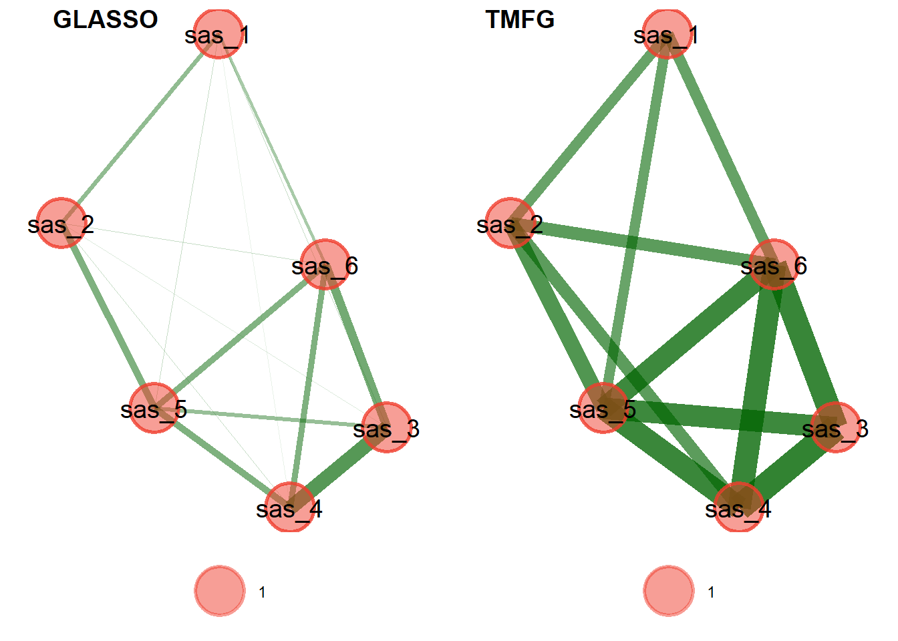
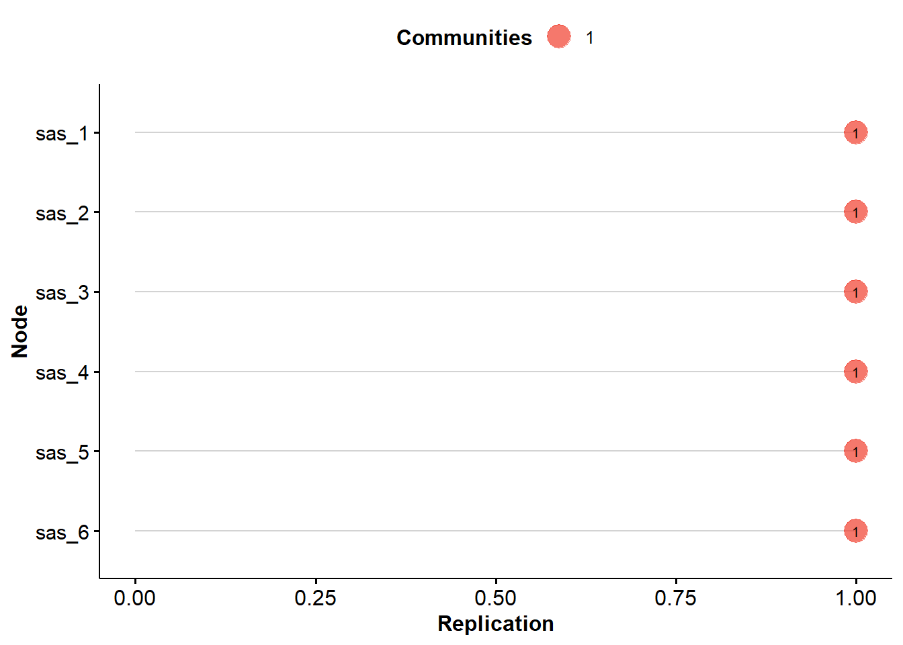
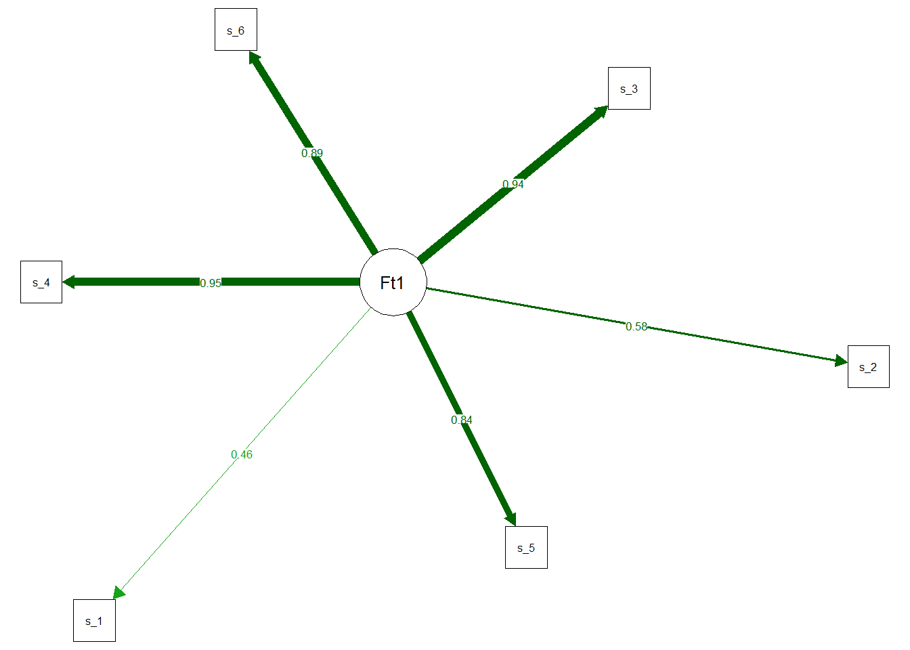

library(dplyr)
library(psychTools)
library(EGAnet)
library(qgraph)
library(tidymodels)
library(ggpubr)
library(kableExtra)4 Dimensionality Analyses
items <- arm1[,2:8]4.1 Detecting redundancy with Unique Variable Analysis
redund <- EGAnet::UVA(data=items[,2:7], method="wTO", type="threshold", corr = "spearman",
reduce=FALSE, adhoc=FALSE, plot.redundancy=TRUE, reduce.method = "remove")
redund.items <- redund$redundancy$redundantHigh redundancies were found between items sas_3 (“The thought of going to sleep makes me uneasy.”) and sas_4, sas_6 (“I am scared of not being able to fall asleep.”).
5 Initial Dimensionality Estimation
5.1 Model with redundancies
# EGA (with redundancy)
ega.wr.tmfg <- EGA(items[,2:7], algorithm = "walktrap", model = "TMFG", corr = "spearman",
plot.EGA = FALSE, uni.method = "LE")
ega.wr.glasso <- EGA(items[,2:7], algorithm = "walktrap", model = "glasso", corr = "spearman",
plot.EGA = FALSE, uni.method = "LE",plot.args = list())
comp.plots.wr <- EGAnet::compare.EGA.plots(
ega.wr.glasso, ega.wr.tmfg,
base.plot = 1,
labels = c("GLASSO", "TMFG"),
rows = 1, columns = 2
)
comp.plots.wr$comparison.plotNULL5.1.1 Structural consistency
boot.tmfg.wr <- bootEGA(items[,2:7], iter = 1000, model = "TMFG", type = "parametric", corr = "spearman", algorithm = "walktrap", plot.typicalStructure = FALSE)
boot.glasso.wr <- bootEGA(items[,2:7], iter = 1000, model = "glasso", type = "parametric", corr = "spearman", plot.typicalStructure = FALSE)# Descriptive statistics
desc.stab.wr <- rbind(boot.tmfg.wr$summary.table, boot.glasso.wr$summary.table)
row.names(desc.stab.wr) <- c("TMFG", "GLASSO")
desc.stab.wr n.Boots median.dim SE.dim CI.dim Lower.CI Upper.CI Lower.Quantile
TMFG 1000 1 0 0 1 1 1
GLASSO 1000 1 0 0 1 1 1
Upper.Quantile
TMFG 1
GLASSO 1# Frequency of dimensions
dim.freq.wr <- rbind(boot.tmfg.wr$frequency, boot.glasso.wr$frequency)
row.names(dim.freq.wr) <- c(rep("TMFG", nrow(boot.tmfg.wr$frequency)),
rep("GLASSO", nrow(boot.glasso.wr$frequency)))
dim.freq.wr # of Factors Frequency
TMFG 1 1
GLASSO 1 1# structural consistency
dim.stab.wr.tmfg <- dimensionStability(boot.tmfg.wr)
dim.stab.wr.glasso <- dimensionStability(boot.glasso.wr)
5.1.2 Standardized node strenght
# Compute standardized node strength
net.loads(ega.wr.glasso)$std 1
sas_4 0.4713846
sas_3 0.4577097
sas_6 0.4187228
sas_5 0.4166646
sas_2 0.2331131
sas_1 0.16057136 EGA x CFA
cfa.ega <- CFA(ega.obj = ega.wr.glasso, data = arm1, estimator="WLSMV", plot.CFA = TRUE)[1] "sas_1" "sas_2" "sas_3" "sas_4" "sas_5" "sas_6"
model_sas <- "
SAS =~ sas_1 + sas_2 + sas_3 + sas_4 + sas_5 + sas_6
"
#sas_1 ~~ sas_2
fit_sas <- lavaan::cfa(model = model_sas,
std.lv = TRUE, ordered=TRUE, data = items)
semTools::fitmeasures(fit_sas,
fit.measures = c("rmsea", "rmsea.ci.lower", "rmsea.ci.upper", "cfi",
"rmsea.robust", "rmsea.ci.lower.robust", "rmsea.ci.upper.robust", "tli.robust", "cfi.robust", "srmr_bentler")) rmsea rmsea.ci.lower rmsea.ci.upper
0.086 0.071 0.102
cfi rmsea.robust rmsea.ci.lower.robust
0.998 0.142 0.126
rmsea.ci.upper.robust tli.robust cfi.robust
0.160 0.936 0.961
srmr_bentler
0.026 lavaan::modindices(fit_sas) |>
dplyr::arrange(-mi) |>
head(10) |>
kbl() |>
kable_paper()| lhs | op | rhs | mi | epc | sepc.lv | sepc.all | sepc.nox |
|---|---|---|---|---|---|---|---|
| sas_1 | ~~ | sas_2 | 39.616441 | 0.1481917 | 0.1481917 | 0.2056333 | 0.2056333 |
| sas_2 | ~~ | sas_5 | 28.317899 | 0.1171795 | 0.1171795 | 0.2686471 | 0.2686471 |
| sas_3 | ~~ | sas_4 | 28.203333 | 0.0911693 | 0.0911693 | 0.8091541 | 0.8091541 |
| sas_2 | ~~ | sas_3 | 16.439725 | -0.1019714 | -0.1019714 | -0.3595978 | -0.3595978 |
| sas_3 | ~~ | sas_5 | 12.505353 | -0.0597031 | -0.0597031 | -0.3191656 | -0.3191656 |
| sas_2 | ~~ | sas_4 | 11.421805 | -0.0851128 | -0.0851128 | -0.3239582 | -0.3239582 |
| sas_1 | ~~ | sas_4 | 6.739732 | -0.0714343 | -0.0714343 | -0.2494711 | -0.2494711 |
| sas_1 | ~~ | sas_3 | 5.187159 | -0.0623256 | -0.0623256 | -0.2016622 | -0.2016622 |
| sas_5 | ~~ | sas_6 | 5.068341 | 0.0354439 | 0.0354439 | 0.1433690 | 0.1433690 |
| sas_4 | ~~ | sas_6 | 4.281294 | -0.0356978 | -0.0356978 | -0.2397277 | -0.2397277 |